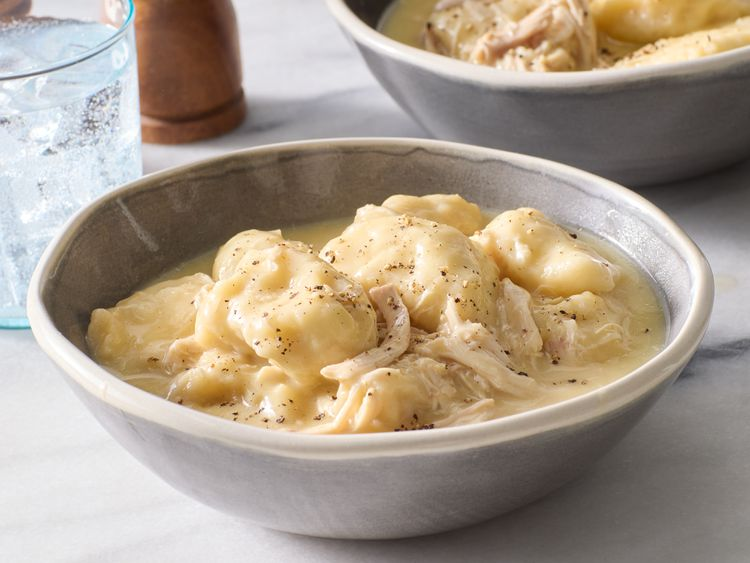

Ingredients:
- 2 (10.5 ounce) cans condensed cream of chicken soup
- 3 (14 ounce) cans chicken broth
- 3 cups shredded cooked chicken meat
- 2 (10 ounce) cans refrigerated biscuit dough
Directions:
Step 1
Gather all ingredients.
Step 2
Stir condensed soup, chicken broth, and shredded chicken together in a large saucepan over medium-high heat until it begins to simmer.
Step 3
Cut each biscuit into quarters, and gently stir into the simmering soup.
Step 4
Reduce heat to medium-low, cover, and simmer until biscuits are no longer doughy in the center, 10 to 15 minutes.
Step 5
Serve and enjoy!
Back to home